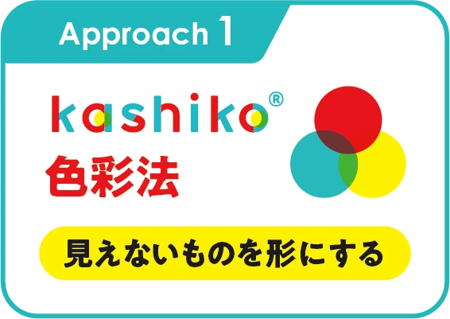
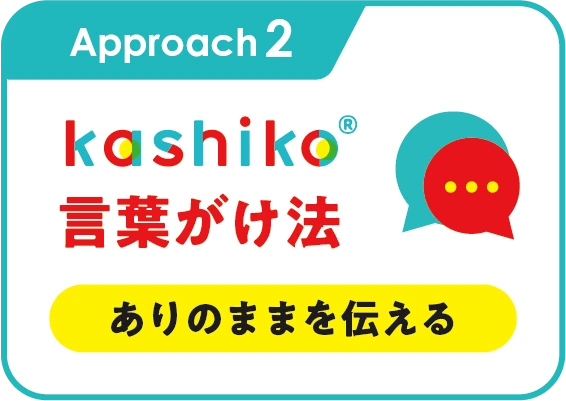
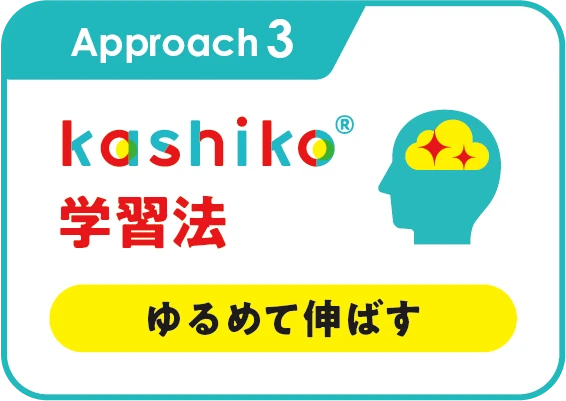
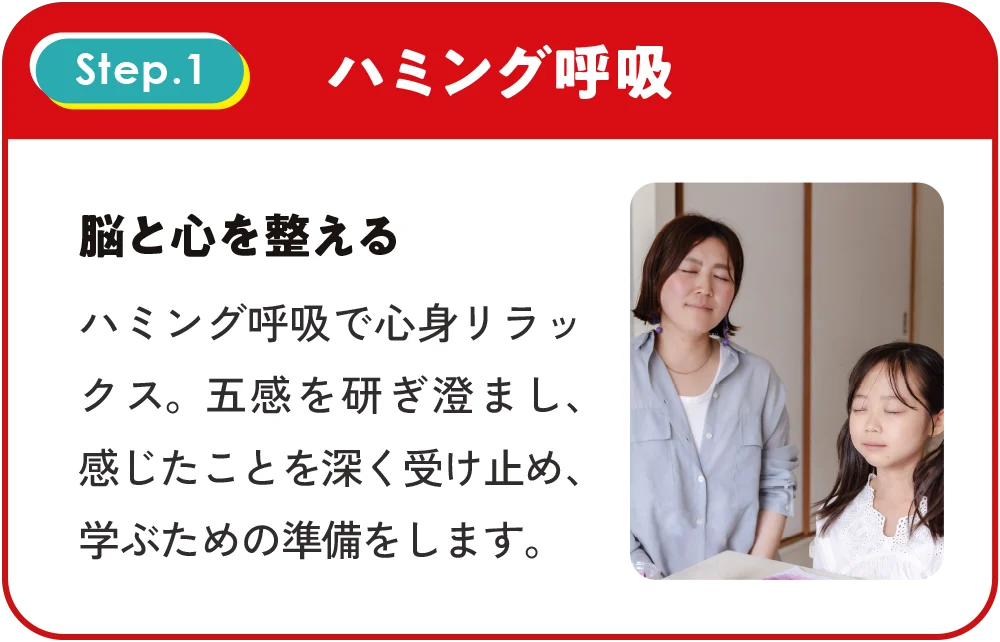
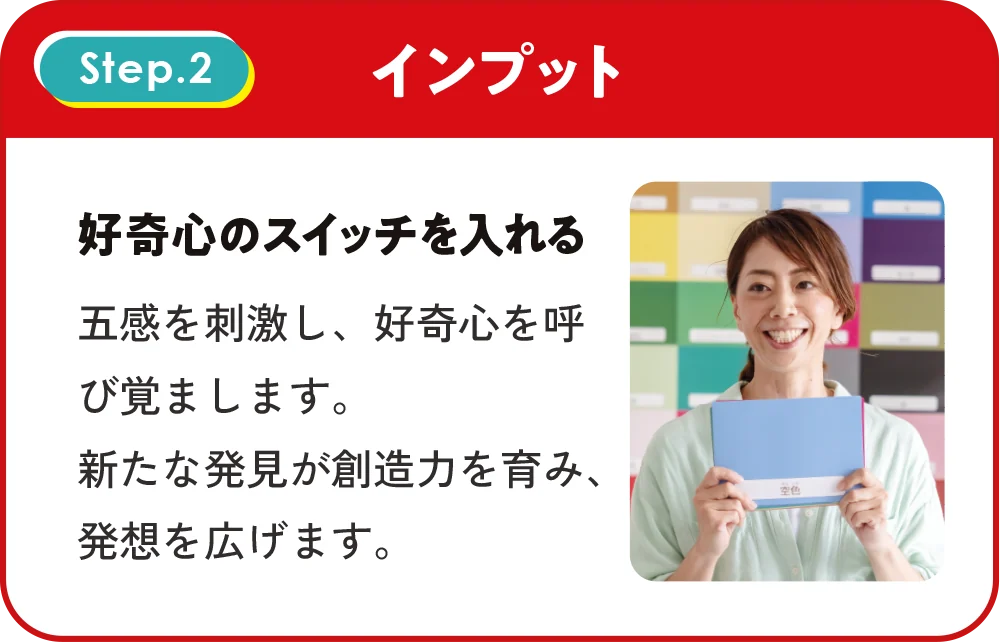
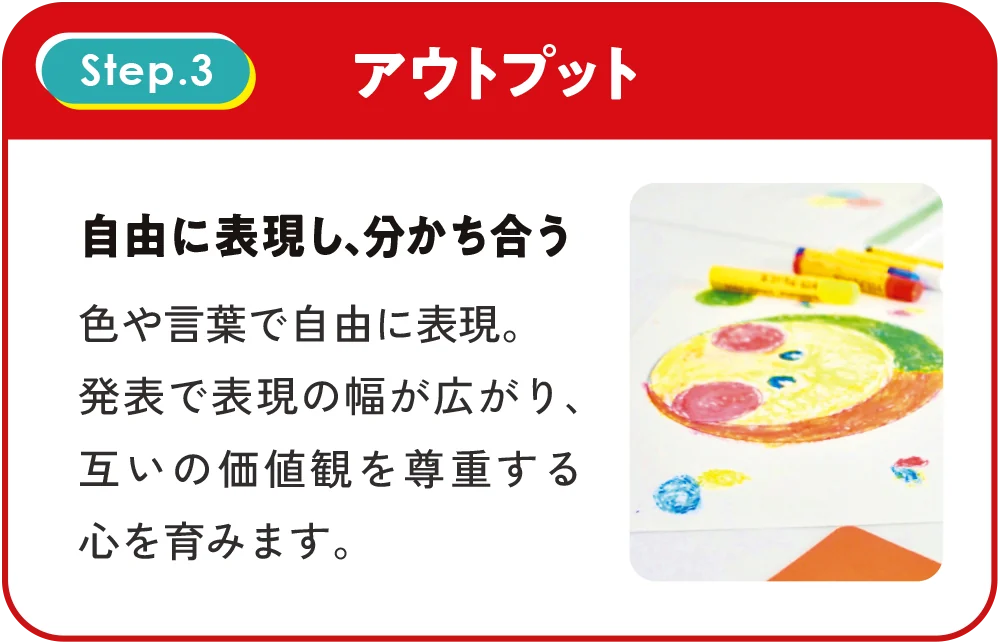
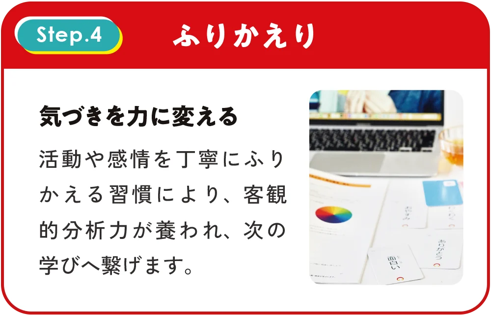
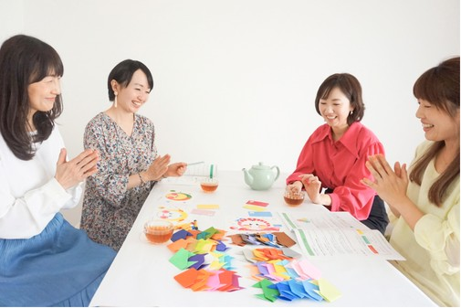

こんなこと、ありませんか？
「どうしてあんな言い方をしちゃったんだろう」と、子どもが寝たあとに思い返す。
ほめたいのに、「えらいね」「すごいね」しか出てこない。
叱りすぎるのも、甘やかすのも、なんだか違う気がする。
育児本やSNSを見るほど、何が正解かわからなくなる。

どれも、子どもを大切に思っている
からこその迷いです。
あなたのせいではありません。
kashiko®メソッドの考え方
叱る・ほめる、
のあいだにある言葉がけ
いい・悪いの評価をつけずに、子どもの「見たまま」を言葉にして伝えます。
放っておくのでも、甘やかすのでもありません。子どもが「見てもらえている」と感じられる、あたたかい関わり方です。
色と言葉で、
ありのままを伝え合う
日本こども色彩協会が生み出した、ありのままを伝える言葉がけの方法です。色を使って気持ちや感覚を見える形にするので、言葉にするのが苦手な子どもも、大人も取り組めます。
色 × 言葉がけ × 学習法で、感情（ka）・視覚（shi）・行動（ko）に働きかける。脳科学・心理学・大脳生理学を基にした教育メソッドです。
kashiko®メソッドの
3つのアプローチ
kashiko®で身につく「じぶん色」に輝き合うための力は、この3つのアプローチ方法から生まれます。

色を使ったコミュニケーションで、今まで気づかなかった世界の豊かさや、あなただけの答えに出会えます。

評価をしない関わり方が「そのままで大丈夫」という安心感を生み、お互いを信頼し合える関係を育みます。

4つのステップ（ハミング呼吸→インプット→アウトプット→ふりかえり）で、自分らしく輝ける土台を作ります。
年齢・性別・地域・障がいの有無に関係なく知性と個性を伸ばすことができ、家庭・保育・教育機関・企業・スポーツ・福祉・医療など、さまざまな場面で取り入れられています。
学ぶことで、感性から協働性まで、7つの力を育てていきます。

これらの力は、脳科学・心理学・大脳生理学に基づく3つのアプローチを繰り返し体験することで、自然と身についていきます。
受けたあと、こう変わります

① 毎日の会話が変わる
「どうしたの！」の代わりに、「見たまま」を伝えられるようになります。
② 子どもの様子が見えてくる
色を選ぶ様子から、その日の気持ちに気づけるようになります。
③ 仕事や活動にも広がる
保育・教育・福祉の現場や、ご自身の活動にも使えます。
講座を受けた方だけが
手にできる、特別なかるた

こんなふうに使えます
- 「今日の気持ちは、どの色？」と選んでもらう
- 色を1つ決めて、「その色の仲間だと思う言葉は？」と探す
- 言葉にしづらい気持ちを、カードで伝えてもらう

このかるたは、講座の受講者だけにお渡ししています。
家庭から、
仕事の現場まで
色と言葉を使うので、年齢や立場を選ばず、いろいろな場面で使えます。


受講した方の、
実際の声
講座後の振り返りシートより
「特別な道具もなく、すぐに実践できそう！と感じました。」
「『見たまま伝える』は簡単そうで難しいと感じました。これまで自分がどのように声かけしていたのか振り返りながら受講できたので、どこを改善していったら良いか見当がつきました。」
「ポジティブな感情をあらわすことばがスッと出てこなかったので、増やしたいし、子どもにバリエーション豊かなことばをつかってあげたいなと思いました。」
「全てのワークがスムーズに行えたのは、れもんさんがかしこ式で接してくれているからだと感じました。この安心して本音で発表できる関係性を、家族をはじめとした大切な人たちと築いていきたいです。」
「初日と受講後で、3つの質問についての捉え方の姿勢が自分自身で変わったことに驚いています。受講してよかったです。」
「思い切って講座を受講して良かったと思える内容でした。少しずつ自身の生活に取り入れていきたいと思っています。」
学びの4ステップ




基礎講座で学ぶこと
安心して受講いただける理由

実践重視の学び
体験しながら学ぶので、受講後すぐ日常で使えます。
質問しやすい温かい雰囲気
「正解は自分で決めていい」。どんな質問も大切にする、安心の場です。
日常ですぐに使える教材
レッスンと同じ教材で、ご自宅でも復習・実践できます。
知識不要の体験学習
色彩の経験がなくても、色に触れながら無理なく学べます。
日程と受講方法
対面・オンラインなど、あなたのライフスタイルに合わせて選択していただけます。
ご希望の日をご相談ください
（計6時間）
対面は京都・滋賀・大阪・
※日程・時間はご相談いただけます。1日集中（2日分を続けて）など、受講時間もご相談いただけます。

講師
はじめまして、
藤本れもんです
kashiko®メソッドの講師をしています。このメソッドを知ったとき、「こんな言葉がけがあったんだ」と感動しました。
元不登校だった長男との関わりの中でも、見たままを伝える言葉がけに、何度も支えられました。約1年半で学校に戻った今、「子どもの“見たまま”を受け止める言葉がけ」をお伝えしています。
教育は、お金をかけすぎなくても、今日から身近な言葉がけで始められると思っています。
日本こども色彩協会
kashiko®メソッドは、日本こども色彩協会オリジナルのメソッドです。

なぜ kashiko®メソッドが
選ばれるのか？
確かな研究に基づく安心感
脳科学・心理学・大脳生理学に基づく、理論的な背景のあるメソッドです。
色の持つ自然な力
色に正解も不正解もないから、誰もが自分らしく表現できます。
年齢や状況を問わない包容力
0歳から100歳まで、性別や障がいの有無に関係なく、どなたでも参加できます。
協会による確かな品質
協会が開発・監修する公式プログラム。全国どこでも同じ品質で学べます。
学んで終わり、にしません

日々の実践や、迷ったことを、受講生どうしで共有できます。
受講後すぐに参加できます。
学び続けられる場があるから、「習ったけど使えていない」で終わりません。
受講料・教材費
- kashiko®かるた48色カード・96種の言葉カード受講者限定
- テキスト
- 画材
（kitpas） - 折り紙
- オリジナル
塗り絵 - 修了証
受講生専用コミュニティにも
ご参加いただけます。
※藤本の受講生のみです
kashiko®ミニレッスン開講講座
6,600円（税込）
色・言葉がけ・学習法を実際に体験する「kashiko®ミニレッスン」を、有料で開講できるようになります。
まずは無料の体験ワークで、
雰囲気を確かめてください。
ご受講の流れ
- STEP1体験ワーク・
お申し込み - STEP2日程のご確認
- STEP3お支払い
- STEP4教材発送
- STEP5受講
kashiko®メソッド
ファシリテーターに！
よくある質問
子どもに関わる仕事をしていなくても大丈夫？
はい。育児中の方や、日常の会話を変えたい方が多く受講しています。
すぐ日常で試せますか？
はい。学んだ言葉がけは、その日から身近な会話で試せます。
無料の体験ワークと、基礎講座の違いは？
体験ワークは、kashiko®メソッドの入口を約90分で体験できます。基礎講座では、考え方からかるたの使い方、日常での活かし方まで学びます。
子育て中で時間が限られていますが、6時間で身につきますか？
kashiko®メソッドは体系化されたメソッドなので、効率よく学習いただけます。また、受講後のコミュニティで継続的にサポートしますので、ご安心ください。
オンラインでも、対面と同じ内容を学べますか？
はい。オンライン・対面ともに同じカリキュラムで進行します。オンラインでも充分に学習いただけるよう配慮しています。
仕事や活動に活かせますか？
育児・保育・教育・福祉の現場で、日常の関わりに取り入れている方がいます。活動として広げたい方は、オプションのミニレッスン開講講座で、有料レッスンの開催も可能です。
分割払いは可能ですか？
お支払い方法については、担当講師に個別にご相談ください。
受講できない日程がある場合は？
日程調整や振替受講について、講師とご相談して決めていただくことができます。
「見たままを伝える」は、
今日からできる小さな一歩です。